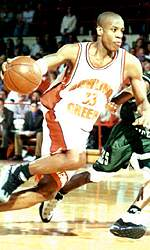

If a link is followed by this icon:  , it is a video in spoken English, if:
, it is a video in spoken English, if:  , it is in ASL.
, it is in ASL.
 Stewart, D. (June 1, 1991). Deaf sport: The impact of sports within the Deaf community. Washington, D.C.: Gallaudet University Press. ISBN-10: 0930323742, ISBN-13: 978-0930323745.
Stewart, D. (June 1, 1991). Deaf sport: The impact of sports within the Deaf community. Washington, D.C.: Gallaudet University Press. ISBN-10: 0930323742, ISBN-13: 978-0930323745.
By using a visual dictionary to see the playing field and equipment used in a given sport, as well as reading the rules of the game, visualize what situations, spatial relations, and vocabulary might come up, involving both specialized and non-specialized vocabulary. Think of how you would sign these. As you learn each sports sign: understand what the term means conceptually (ask a friend, use an English dictionary), produce the sign from the picture in the sports sign dictionary, try to understand where the sign came from. Below are some categories that might help you in this last step. (For an explanation of the glossing system, see explanation of the glossing system.)
(2) (Hearing) hand signal - walking: [S] hands rotate over one another, offensive foul: [5] clasps back of head.
(3) conceptual - court: FLOOR.
(4) letter - defense: "D", offense: "O".
(5) abbreviation - quarter: Q-T, overtime: O-T.
(6) body classifiers use the whole body to show actions like struggling to open a window, grabbing a hold of a person by the lapels, or putting hands on hips to show displeasure.
(7) Instrument classifiers show how a hand-held object behaves - dribble: [5:], PO down, bobs.
(8) Semantic classifiers - pivot: [V] pivots one "leg" on [B], PO up.
(9) Plural classifiers - scrimmage: (2h)[B], palms touching, FTs move lf to rt in arc,while arms are stationary, press: (2h)[5] slam together than move side to side while still in contact.
(10) spatialization - one-three-one zone: [1], then [3], then [1], PO away, FO up, moves towards body.
(11) listing - first quarter: FIRST INDEX-1-ON-LIST-OF-4 , first half: flat hand slides over edge of [B] to between middle and fourth finger.
The following information is taken from the three-volume videotape collection Bienvenu, MJ & Colonomos, B. ASL Numbers: Developing your skills (Cardinal & ordinal systems; Incorporating systems; and Unique systems). Sign Media Inc.
For identifying players by their jersey numbers ("Number 67 has just made a field goal!"), use the special numbering system for concepts like "room number 7", "highway number 3", and "volume number 2": for the numbers 1 through 9, the palm orientation (PO) is towards the non-dominant side (NDS) and the fingertip orientation (FO) is away from the signer. For 10 to 15, the number is produced rapidly, multiple times. 16 through 19, the hand is twisted only once, instead of twice, as the cardinal (counting) numbers should be. 20 and so on are produced like the cardinal numbers. In addition, for all these numbers, the hand is held so close to the body that the wrist touches the chest.
For reporting the score of a sports game, the home team score is produced at the chest and the visiting team is produced further away from the body. All numbers are produced so that the PO is towards the signer, even the numbers 6 to 9. The higher score is also always reported first. If there is a tie, the hands begin together and separate into the appropriate handshapes to report the score. If the progress of the game is being reported, the hands rise higher as the scores increase. If the signer is neutral, that is does not support either team, the scores are reported on either hand, according to how the teams were spatialized during the conversation, with the leading (or victorious) team first.
For reporting the "place" of the team (first place, second place, third place, and so on), the PO is towards the signer, the FO is towards the NDS, and the handshape ([1], [2], [3], and so on) moves towards the dominant side. Another way is PO towards NDS, FO away from signer, and the handshape moves away from the signer. In rapid conversation, the hand may move rapidly towards the signer with a short jerk.
For most sports, the interpreter can stay on the bench or close to the couch, and the Deaf consumer/s can look to the coach and interpreter during instructions.
The following advice is summarized from online comments by Brian McKenny and Jody. Jody, if you read this and want to send me your last name for proper attributions, my email is dbartzur@earthlink.net.
When the D/deaf player is at bat, the interpreter should stay in the dugout or coach's box. Some prefer to stand just off the playing field on the sidelines so that they can jump in more easily. Also the player can keep their eye out for the interpreter to feed them any information that was being hollered their way. Most of the communication between players on the field takes place with sports signals. S/he can recognize a ball or strike by looking at the umpire. If the player is on base, the 1st and 3rd base coaches, who signal a runner to steal or keep running use hand signals to signify this. The interpreter for the practices and the player should learn these. If the player is a pitcher, the catcher gives hand signals for the type of pitch to use. The interpreter should be available for any time-outs between the coach, catcher, and pitcher. These need to be interpreted. Otherwise, let him/her play.
If there is a "meeting" on field between any of the players or the coach and the players, the interpreter should use judgment as to whether or not to go out on the field. If the player says no, then don't. S/he will know very quickly if there is a need and may call you over later. For future meetings, you can go right out there. It's best to inform both the umpire and the opposing coach that you will be interpreting before the game starts. This lessens confusion.
If you are a staff interpreter with the district, you need to work it out with the district on how you are paid. If not, you might work out a flat rate for the games. You may prefer to drive your own car rather than ride the bus. You should be able to get paid for travel time. This may end up being cheaper for them than paying you from point of origin (getting on the bus) because they probably will leave hours before the game.
The following advice is summarized from online comments by Jody and Mel Fros, a Deaf coach.
For soccer, much of what is said above applies. Instead of informing the umpire that you will be interpreting, it is appropriate to approach the ref. You might request that they have the players raise their hands when the whistle is blown so the deaf student doesn't continue the play.
Here are some comments from Mel, a Deaf coach: "I am a soccer fanatic and coach. My gut reaction as coach: I would not want an interpreter on the field of play. A deaf kid has to play the game at the same level as hearing kids. I think the rules of the game have to be respected and will determine if a child's handicap makes said activity possible.
"On the other hand, I am all for having an interpreter at practice. In fact, as a deaf coach, I find I am not able to give the kids the individual attention they deserve. Practices last one hour, but the part where communication is needed is only ten minutes or so. But we win while having a splendid time, and that is what the players like about coach Mel :)
GENERAL
Sports in ASL
Acrobatics
Aerobatics
Aerobics
Aikido
Air racing
Archery
Auto racing
Aviation
Badminton
Ballooning
Bandy
Baseball
Basketball
Beach volleyball
Bicycle polo
Billiards (Pool)
BMX racing
Bobsleding
Bocce (Boccia)
Bodybuilding
Boomeranging
Bowling
Boxball
Boxing
Broomball
Canadian football
Candlepin bowling
Canoe polo
Canoeing & kayaking
Caving & karst
Cheerleading
Cricket
Croquet
Cross country skiing
Curling
Cycling
Dance sport
Darts
Disc golf
Diving
Drag racing
Duckpin bowling
Equestrian sports
Fencing
Field archery
Field hockey
Figure skating
Fishing
Five-Pin bowling
Flag football
Flying discs
Footbag
Football
Freestyle skiing
Gaelic football
Gaming
Goalball
Golf
Gymnastics
Handball (see also Team handball)
Hang gliding
Harness racing
Hockey (Ice hockey)
Horse racing
Horseshoe pitching
Hunting
Hurling
Indoor lacrosse
Indoor soccer
Inline skating
Jai alai
Jousting
Judo
Karate
Karting
Kendo
Korfball
Lacrosse
Lawn bowls
Luge
Lumberjack sports
Martial arts
Motocross
Motorboat (Powerboat) racing
Motorcycling
Mountain biking
Nordic combined
NASCAR (car racing)
Orienteering
Paddleball
Paddle tennis
Paintball
Petanque
Pentathlon
Platform tennis
Polo
Powerlifting
Quarterhorse racing
Quoits
Racquetball
R/C model aircraft flying
Rhythmic gymnastics
Rifle shooting
Rodeo
Roller derby
Rounders
Rowing
Rugby
Sailing
Scuba diving
Sepak takraw
Shinty
Shooting
Short track speed skating
Shuffleboard
Skateboarding
Skeleton
Skiing & snowboarding
Skydiving (Target parachuting)
XIV WORLD GAMES FOR THE DEAF Signed narration and voice narration. This special show documents the record breaking 109 medals won by the USA team in 1981 and captures the true life achievement of sport's pioneer, Art Kruger. This is a unique moment in deaf culture. In ASL, in Signed English, in foreign sign languages. Some are very oral, other signers communicate beautifully. All signs come across naturally, not staged, contrived or practiced. David Supalla and Brian Rasmus document the Fourteenth World Games for the Deaf in Cologne, West Germany. Never before have a deaf director and a deaf narrator had the opportunity to show the world what international deaf athletes are all about. Their interviews with game officials are spontaneous and revealing. They communicate with the athletes as equals in practice sessions at North Carolina School for the Deaf then travel with the athletes to report the tension and suspense of the World Class Competition.
About.com. Sports in the deaf community, including deaf athletes.
Bremner, A. Deaf sports in Australia. Melbourne, Australia : La Trobe University 1996 - 195 p.: Master's Thesis.
Deaf sports in Australia. Melbourne, Australia : La Trobe University 1996 - 195 p.: Master's Thesis.
 Coaching deaf athletes. Canberra, Australia : Australian Sports Commission 1992 (Video 10min).
Canadian Deaf Sports Association.
CISS: International Committee of Sports for the Deaf.
Deafness.miningco.com. [Deaf] Sports.
Gallaudet University athletics.
JDCC News Archives. Most issues from Issue 18 on have a page on "Deaf Jews in Sports".
LaFayette Athletic Association of the Deaf (Louisiana).
Leavins, J. (2001, Nov 12). World Games for the Deaf: Deaflympics.
Midwest Athletic Association for the Deaf.
New England Athletics Association of the Deaf.
Ontario Deaf Sport Association.
Stewart, D. A. (1991, June). Deaf sport: The impact of sports within the Deaf community. Washington, D.C.: Gallaudet University Press. ISBN-10: 0930323742, ISBN-13: 978-0930323745. Describing the full ramifications of athletics for Deaf people, this book discusses the meaning of individual participation to the cultural bonding resulting from organizations. Includes profiles of noted Deaf sports figures, and differences particular to Deaf sports, and shows the positive psychological and educational impact of deaf sport.
Strassler, B. (September/October 1996). Deaf Jews in sports.
Terminology collection: Sports and recreation.
When (Deaf) Irish eyes are smiling.
World Recreation Association of the Deaf.
Bar-Tzur, D. (2004). Technical & specialized vocabulary ASL dictionary. Signs of Development. Over 15,000 entries. The dictionary is set up in major categories and further subdivided into categories making navigation as simple as point and click and each entry shows David as the sign model signing the term. There are several hundred entries for sports. To order.
A closer look: Signs for sports. This interactive CD-ROM demonstrates basic vocabulary using common signs used in sports and sporting events in secondary and postsecondary settings. Interpreters, students who are deaf, teachers and parents will benefit by preparing for vocabulary that might be used in the classroom as well as on the playing field. [Online Interactive Version]
Lazorisak, C. and Lazorisak, A. Sports & P.E. signs. Signs of Development, Inc. "As interpreters, we do not only work in classroom settings interpreting lectures. Our work frequently finds us in gyms or out on the playing fields. This rough and tumble workshop is presented by a sports lover who will not only teach you the signs for the most popular sports and games but will do so through his talent of storytelling which will give you the information in context (research has proven this to be the most effective way to learn.) Andy is a graduate of the NJ School for the Deaf and is a master storyteller." To order.
Lolling, L. Deaf Yoga for beginners is specifically designed to bring the powerful benefits of Yoga to the Deaf, as it is taught in American Sign Language. This DVD includes quick interactive access menus, practical instructions and other special features. Guided by traditional Hatha Yoga instructor, Lila Lolling, this DVD offers an excellent introduction to various Yoga topics such as Proper Breathing, Chakras and much more!
NTID/RIT Technical Signs. Sports/General.
A comprehensive dictionary of signs for almost every possible word associated with sports and other general physical activities. This tape includes signs for the more common sports as well as those for fencing, archery, judo, and much more.
Sign Media, Inc. Sports Sign Series. VHS: 30 minutes; voiced; signed in ASL. A brief history of the sport, an overview of the rules of the game, and the vocabulary used in the game.
Hickok Sports: Acrobatics rules.
Bar-Tzur, D. Resources for technical/specialized interpreting: Aviation.
A glossary of flying: A dictionary of aeronautics terms.
Hickok Sports: Aerobatics rules.
The National Business Aviation Association - Sign Language dictionary.
A glossary of water aerobics terms.
Hickok Sports: Aerobics rules.
Bar-Tzur, D. Resources for technical/specialized interpreting: Aviation.
Hickok Sports: Air racing rules.
The National Business Aviation Association - Sign Language dictionary.
HickokSports.com: Glossary for archery.
USA Archery: Rules and regulations.
Gunderson racing. Greg Gunderson is a deaf stock racing driver.
HickokSports.com: Auto racing glossary.
HickokSports.com: Auto racing rules.
Deaf Pilots Association, Inc. Hearing loss of any degree or even total deafness need not disqualify anyone from earning a pilot's certificate. From the beginning of aviation, deaf and hard of hearing people have flown airplanes solo in the United States, Canada and some other countries, and today some 100 to 120 of them are active pilots and aircraft owners. On this site you can see how they won their wings without having to use the radio, and, if you like, join them in the skies as members of the Deaf Pilots Association.
HickokSports.com: Badminton glossary.
Glossary of ballooning jargon.
HickokSports.com: Balooning rules.
HickokSports.com: Bandy rules.
TenBruggencate, J. (2005, October 27). Deaf player separated from his interpreter.
Baseball rules - Past and present.
Curtis Pride. Deaf baseball player.
Dummy Hoy. Deaf baseball player.
Gallaudet University baseball.
Griffin, S.
Coaching deaf athletes. Canberra, Australia : Australian Sports Commission 1992 (Video 10min).
Canadian Deaf Sports Association.
CISS: International Committee of Sports for the Deaf.
Deafness.miningco.com. [Deaf] Sports.
Gallaudet University athletics.
JDCC News Archives. Most issues from Issue 18 on have a page on "Deaf Jews in Sports".
LaFayette Athletic Association of the Deaf (Louisiana).
Leavins, J. (2001, Nov 12). World Games for the Deaf: Deaflympics.
Midwest Athletic Association for the Deaf.
New England Athletics Association of the Deaf.
Ontario Deaf Sport Association.
Stewart, D. A. (1991, June). Deaf sport: The impact of sports within the Deaf community. Washington, D.C.: Gallaudet University Press. ISBN-10: 0930323742, ISBN-13: 978-0930323745. Describing the full ramifications of athletics for Deaf people, this book discusses the meaning of individual participation to the cultural bonding resulting from organizations. Includes profiles of noted Deaf sports figures, and differences particular to Deaf sports, and shows the positive psychological and educational impact of deaf sport.
Strassler, B. (September/October 1996). Deaf Jews in sports.
Terminology collection: Sports and recreation.
When (Deaf) Irish eyes are smiling.
World Recreation Association of the Deaf.
Bar-Tzur, D. (2004). Technical & specialized vocabulary ASL dictionary. Signs of Development. Over 15,000 entries. The dictionary is set up in major categories and further subdivided into categories making navigation as simple as point and click and each entry shows David as the sign model signing the term. There are several hundred entries for sports. To order.
A closer look: Signs for sports. This interactive CD-ROM demonstrates basic vocabulary using common signs used in sports and sporting events in secondary and postsecondary settings. Interpreters, students who are deaf, teachers and parents will benefit by preparing for vocabulary that might be used in the classroom as well as on the playing field. [Online Interactive Version]
Lazorisak, C. and Lazorisak, A. Sports & P.E. signs. Signs of Development, Inc. "As interpreters, we do not only work in classroom settings interpreting lectures. Our work frequently finds us in gyms or out on the playing fields. This rough and tumble workshop is presented by a sports lover who will not only teach you the signs for the most popular sports and games but will do so through his talent of storytelling which will give you the information in context (research has proven this to be the most effective way to learn.) Andy is a graduate of the NJ School for the Deaf and is a master storyteller." To order.
Lolling, L. Deaf Yoga for beginners is specifically designed to bring the powerful benefits of Yoga to the Deaf, as it is taught in American Sign Language. This DVD includes quick interactive access menus, practical instructions and other special features. Guided by traditional Hatha Yoga instructor, Lila Lolling, this DVD offers an excellent introduction to various Yoga topics such as Proper Breathing, Chakras and much more!
NTID/RIT Technical Signs. Sports/General.
A comprehensive dictionary of signs for almost every possible word associated with sports and other general physical activities. This tape includes signs for the more common sports as well as those for fencing, archery, judo, and much more.
Sign Media, Inc. Sports Sign Series. VHS: 30 minutes; voiced; signed in ASL. A brief history of the sport, an overview of the rules of the game, and the vocabulary used in the game.
Hickok Sports: Acrobatics rules.
Bar-Tzur, D. Resources for technical/specialized interpreting: Aviation.
A glossary of flying: A dictionary of aeronautics terms.
Hickok Sports: Aerobatics rules.
The National Business Aviation Association - Sign Language dictionary.
A glossary of water aerobics terms.
Hickok Sports: Aerobics rules.
Bar-Tzur, D. Resources for technical/specialized interpreting: Aviation.
Hickok Sports: Air racing rules.
The National Business Aviation Association - Sign Language dictionary.
HickokSports.com: Glossary for archery.
USA Archery: Rules and regulations.
Gunderson racing. Greg Gunderson is a deaf stock racing driver.
HickokSports.com: Auto racing glossary.
HickokSports.com: Auto racing rules.
Deaf Pilots Association, Inc. Hearing loss of any degree or even total deafness need not disqualify anyone from earning a pilot's certificate. From the beginning of aviation, deaf and hard of hearing people have flown airplanes solo in the United States, Canada and some other countries, and today some 100 to 120 of them are active pilots and aircraft owners. On this site you can see how they won their wings without having to use the radio, and, if you like, join them in the skies as members of the Deaf Pilots Association.
HickokSports.com: Badminton glossary.
Glossary of ballooning jargon.
HickokSports.com: Balooning rules.
HickokSports.com: Bandy rules.
TenBruggencate, J. (2005, October 27). Deaf player separated from his interpreter.
Baseball rules - Past and present.
Curtis Pride. Deaf baseball player.
Dummy Hoy. Deaf baseball player.
Gallaudet University baseball.
Griffin, S. Deaf baseball player reads lips speaking English and Spanish!
Deaf baseball player reads lips speaking English and Spanish!
 Will he be the next Deaf Major League Baseball player? - Ryan Ketchner.
HickokSports.com: Basketball glossary.
Basketball made simple. Has hand signals.
CNN/SI - NBA basketball - glossary.
Coffey, W. (2002). Winning sounds like this: A season with the women's basketball team at Gallaudet, the world's only university for the deaf. This is the remarkable story of the nation's most unique and inspiring women's basketball team and its 1999-2000 season. It is the touching chronicle of players who do not hear buzzers or cheers, a coach who has never used a whistle, and a university that is a mecca for deaf culture throughout the world. Author Wayne Coffey offers an intimate and unsparing look at the players' lives on and off the court, their struggles to overcome mistreatment and misconceptions of the hearing world, and their deeply rooted connection to one another. A historical overview of the education for deaf people is interwoven into the players' hopes and dreams.
Deaf International Basketball Federation is a world governing body for international deaf basketball in cooperation with the Deaflympics and its confederations. DIBF shall be an independent association composed of the National Organisations governing deaf basketball.
First Base Sports: Basketball glossary.
Gallaudet University men's basketball.
Gallaudet University women's basketball.
Official referee hand signals.
Tiefenbacher, W. (ed) (2001). Deaf girls rule. Deaf Girls Rule is a photographic essay documenting the 1999 championship year of the Gallaudet University Women's Basketball team. Accustomed to Gallaudet students competing and excelling in a hearing society, University followers were not surprised to find the team on their way to the NCAA Division III tournament. Excitement for the women's team had built from the start of the year when quality athletes from Minnesota to Sweden enrolled in the school, leading adjunct faculty member Wendy Tiefenbacher to document the season alongside her photography students. This book is the culmination of their work: the photos showing the passion and energy that took the team all the way to the Sweet Sixteen.
HickokSports.com: Beach volleyball rules.
HickokSports.com: Bicycle polo rules.
HickokSports.com: Billiards rules.
HickokSports.com: Auto racing glossary.
HickokSports.com: BMX racing rules.
HickokSports.com: Bobsledding glossary.
HickokSports.com: Bobsledding rules.
Bocce Standards Association: Glossary.
HickokSports.com: Boccia rules.
GetBig.com: Bodybuilding jargon.
GetBig.com: Exercise meanings in bodybuilding & fitness.
GetBig.com: Miscellaneous terms in Bodybuilding & Fitness.
Hickok Sports: Bodybuiliding rules.
Truly Huge: Bodybuilding, health and fitness site.
Boomerang Association of Australia: Boomerang glossary.
Hickok Sports: Boomeranging rules.
HickokSports.com: Bowling glossary.
HickokSports.com: Bowling rules.
Boxball's specialty moves [glossary].
HickokSports.com: Boxball rules.
HickokSports.com: Boxing rules.
HickokSports.com: Broomball rules.
HickokSports.com: Canadian football rules.
HickokSports.com: Candlepin bowling rules.
HickokSports.com: Canoe polo rules.
HickokSports.com: Canoeing & kayaking glossary.
HickokSports.com: Canoeing & kayaking rules.
Navigating discourse genres: ASL and English texts on canoeing in the BWCA. Introductory genre theory and its application to the interpreting process. Includes samples of five genres presented in ASL and English, sample interpretations, and tools and strategies for working with the CD. With scripts, outlines and resources for further study.
USA canoe & kayak or alternate site.
Australian Speleological Federation Inc: Glossary of speleological & caving terms.
Caving Canada: Glossary of Karst-related terms.
Jennings, J. N. (May 26, 1996). Cave & Karst terminology.
World Around You. (2004, Fall). Deaf cheerleaders.
HickokSports.com: Cheerleading rules.
DM's Explanation of Cricket - Glossary.
HickokSports.com: Cricket rules.
HickokSports.com: Croquet rules.
HickokSports.com: skiing glossary.
HickokSports.com: Curling glossary.
HickokSports.com: Curling rules.
HickokSports.com: Cycling glossary.
HickokSports.com: Cycling rules.
Sheldon Brown's Bicycle Glossary.
United States Deaf Cycling Association.
USA cycling: Rulebooks and officials.
United States Dance Championship rules.
HickokSports.com: Darts glossary.
HickokSports.com: Darts rules.
Southern California Deaf Disc Golf.
HickokSports.com: Diving glossary.
HickokSports.com: Diving rules.
United States Aquatic Association of the Deaf.
Glossary of drag racing terms.
HickokSports.com: Drag racing rules.
HickokSports.com: Duckpin bowling rules.
Hickok Sports: Equestrian sports glossary.
Hickok Sports: Equestrian sports rules.
Griffin, S. Deaf Australian fencer to participate in Olympics.
Hickok Sports: Fencing glossary.
United States Fencing Association: Rules of fencing. Click on "Download".
HickokSports.com: Glossary for archery.
HickokSports.com: Field archery rules.
HickokSports.com: Field hockey glossary.
HickokSports.com: Field hockey rules.
HickokSports.com: Figure skating glossary.
HickokSports.com: Figure skating rules.
Fishing-Hunting.com - Complete resource for fishing and hunting.
HickokSports.com: Fishing rules.
National Bass Association of the Deaf.
Southern California Deaf Anglers Club.
Virginia Fly Anglers: Fly fishing glossary.
HickokSports.com: Five-Pin bowling rules.
HickokSports.com: Flag football rules.
United States Flag Football of the Deaf.
Hickok sports: Flying discs rules.
First Base Sports: Football glossary.
Gallaudet University football.
Hickok sports: Football rules.
Schaller, B. (1999). Roar of silence: Trial & triumph through deafness. His world is one without sound, but Kenny Walker made his own noise through his actions growing up in Texas and Colorado. Deaf since suffering meningitis at age 2, Kenny went on the become an All-American at the University of Nebraska before playing five years of professional football. The road was never clear for the former Denver Bronco, but through hard word, perseverance, and the support of people who truly cared for him, Kenny leads a life that is a shining example to those who experience disabilities and those who have not. This book include color photographs of his heartbreaking and heartwarming journey.
Schaller, B. (1999). Silent Warriors football.
Welch, T. (2007, February 16). Funny story about Deaf football player.
Will he be the next Deaf Major League Baseball player? - Ryan Ketchner.
HickokSports.com: Basketball glossary.
Basketball made simple. Has hand signals.
CNN/SI - NBA basketball - glossary.
Coffey, W. (2002). Winning sounds like this: A season with the women's basketball team at Gallaudet, the world's only university for the deaf. This is the remarkable story of the nation's most unique and inspiring women's basketball team and its 1999-2000 season. It is the touching chronicle of players who do not hear buzzers or cheers, a coach who has never used a whistle, and a university that is a mecca for deaf culture throughout the world. Author Wayne Coffey offers an intimate and unsparing look at the players' lives on and off the court, their struggles to overcome mistreatment and misconceptions of the hearing world, and their deeply rooted connection to one another. A historical overview of the education for deaf people is interwoven into the players' hopes and dreams.
Deaf International Basketball Federation is a world governing body for international deaf basketball in cooperation with the Deaflympics and its confederations. DIBF shall be an independent association composed of the National Organisations governing deaf basketball.
First Base Sports: Basketball glossary.
Gallaudet University men's basketball.
Gallaudet University women's basketball.
Official referee hand signals.
Tiefenbacher, W. (ed) (2001). Deaf girls rule. Deaf Girls Rule is a photographic essay documenting the 1999 championship year of the Gallaudet University Women's Basketball team. Accustomed to Gallaudet students competing and excelling in a hearing society, University followers were not surprised to find the team on their way to the NCAA Division III tournament. Excitement for the women's team had built from the start of the year when quality athletes from Minnesota to Sweden enrolled in the school, leading adjunct faculty member Wendy Tiefenbacher to document the season alongside her photography students. This book is the culmination of their work: the photos showing the passion and energy that took the team all the way to the Sweet Sixteen.
HickokSports.com: Beach volleyball rules.
HickokSports.com: Bicycle polo rules.
HickokSports.com: Billiards rules.
HickokSports.com: Auto racing glossary.
HickokSports.com: BMX racing rules.
HickokSports.com: Bobsledding glossary.
HickokSports.com: Bobsledding rules.
Bocce Standards Association: Glossary.
HickokSports.com: Boccia rules.
GetBig.com: Bodybuilding jargon.
GetBig.com: Exercise meanings in bodybuilding & fitness.
GetBig.com: Miscellaneous terms in Bodybuilding & Fitness.
Hickok Sports: Bodybuiliding rules.
Truly Huge: Bodybuilding, health and fitness site.
Boomerang Association of Australia: Boomerang glossary.
Hickok Sports: Boomeranging rules.
HickokSports.com: Bowling glossary.
HickokSports.com: Bowling rules.
Boxball's specialty moves [glossary].
HickokSports.com: Boxball rules.
HickokSports.com: Boxing rules.
HickokSports.com: Broomball rules.
HickokSports.com: Canadian football rules.
HickokSports.com: Candlepin bowling rules.
HickokSports.com: Canoe polo rules.
HickokSports.com: Canoeing & kayaking glossary.
HickokSports.com: Canoeing & kayaking rules.
Navigating discourse genres: ASL and English texts on canoeing in the BWCA. Introductory genre theory and its application to the interpreting process. Includes samples of five genres presented in ASL and English, sample interpretations, and tools and strategies for working with the CD. With scripts, outlines and resources for further study.
USA canoe & kayak or alternate site.
Australian Speleological Federation Inc: Glossary of speleological & caving terms.
Caving Canada: Glossary of Karst-related terms.
Jennings, J. N. (May 26, 1996). Cave & Karst terminology.
World Around You. (2004, Fall). Deaf cheerleaders.
HickokSports.com: Cheerleading rules.
DM's Explanation of Cricket - Glossary.
HickokSports.com: Cricket rules.
HickokSports.com: Croquet rules.
HickokSports.com: skiing glossary.
HickokSports.com: Curling glossary.
HickokSports.com: Curling rules.
HickokSports.com: Cycling glossary.
HickokSports.com: Cycling rules.
Sheldon Brown's Bicycle Glossary.
United States Deaf Cycling Association.
USA cycling: Rulebooks and officials.
United States Dance Championship rules.
HickokSports.com: Darts glossary.
HickokSports.com: Darts rules.
Southern California Deaf Disc Golf.
HickokSports.com: Diving glossary.
HickokSports.com: Diving rules.
United States Aquatic Association of the Deaf.
Glossary of drag racing terms.
HickokSports.com: Drag racing rules.
HickokSports.com: Duckpin bowling rules.
Hickok Sports: Equestrian sports glossary.
Hickok Sports: Equestrian sports rules.
Griffin, S. Deaf Australian fencer to participate in Olympics.
Hickok Sports: Fencing glossary.
United States Fencing Association: Rules of fencing. Click on "Download".
HickokSports.com: Glossary for archery.
HickokSports.com: Field archery rules.
HickokSports.com: Field hockey glossary.
HickokSports.com: Field hockey rules.
HickokSports.com: Figure skating glossary.
HickokSports.com: Figure skating rules.
Fishing-Hunting.com - Complete resource for fishing and hunting.
HickokSports.com: Fishing rules.
National Bass Association of the Deaf.
Southern California Deaf Anglers Club.
Virginia Fly Anglers: Fly fishing glossary.
HickokSports.com: Five-Pin bowling rules.
HickokSports.com: Flag football rules.
United States Flag Football of the Deaf.
Hickok sports: Flying discs rules.
First Base Sports: Football glossary.
Gallaudet University football.
Hickok sports: Football rules.
Schaller, B. (1999). Roar of silence: Trial & triumph through deafness. His world is one without sound, but Kenny Walker made his own noise through his actions growing up in Texas and Colorado. Deaf since suffering meningitis at age 2, Kenny went on the become an All-American at the University of Nebraska before playing five years of professional football. The road was never clear for the former Denver Bronco, but through hard word, perseverance, and the support of people who truly cared for him, Kenny leads a life that is a shining example to those who experience disabilities and those who have not. This book include color photographs of his heartbreaking and heartwarming journey.
Schaller, B. (1999). Silent Warriors football.
Welch, T. (2007, February 16). Funny story about Deaf football player. Hickok sports: Freestyle skiing glossary.
Hickok sports: Freestyle skiing rules.
Hickok sports: Gaelic football rules.
Blakemore, M. The ABC's of golf. How to's and glossary.
Central Illinois Deaf Golf Association.
Deaf Golf Association or other site.
Eastern Pennsylvania Golf Association of the Deaf.
Georgia Deaf Golfers Association.
Michigan Wolverine Deaf Lady Golfers.
Southeastern Deaf Golfers Association.
Worldgolf: The golfer's dictionary.
Hickok sports: Gymnastics glossary.
Hickok sports: Gymnastics rules.
World around you, Gallaudet University. (December 08, 2006). Deaf gymnast Aimee Walker Pond.
Hickok sports: Freestyle skiing glossary.
Hickok sports: Freestyle skiing rules.
Hickok sports: Gaelic football rules.
Blakemore, M. The ABC's of golf. How to's and glossary.
Central Illinois Deaf Golf Association.
Deaf Golf Association or other site.
Eastern Pennsylvania Golf Association of the Deaf.
Georgia Deaf Golfers Association.
Michigan Wolverine Deaf Lady Golfers.
Southeastern Deaf Golfers Association.
Worldgolf: The golfer's dictionary.
Hickok sports: Gymnastics glossary.
Hickok sports: Gymnastics rules.
World around you, Gallaudet University. (December 08, 2006). Deaf gymnast Aimee Walker Pond. An in-depth interview features deaf gymnast Aimee Walker Pond.
Glossary of one-wall handball terms.
Hickok sports: Handball rules.
Glossary of Hang Gliding Terms.
Hickok sports: Hang gliding rules.
Hickok sports: Harness racing rules.
CTV (Canadian Television) story on Megan McHugh, a Deab-Blind hockey player.
An in-depth interview features deaf gymnast Aimee Walker Pond.
Glossary of one-wall handball terms.
Hickok sports: Handball rules.
Glossary of Hang Gliding Terms.
Hickok sports: Hang gliding rules.
Hickok sports: Harness racing rules.
CTV (Canadian Television) story on Megan McHugh, a Deab-Blind hockey player.  Requires QuickTime.
First Base Sports: Ice hockey glossary. Very comprehensive.
Hickok sports: Hockey glossary.
Hickok sports: Horse racing rules.
Hickok sports: Horseshoe pitching rules.
Fishing-Hunting.com - Complete resource for fishing and hunting.
The Hunting Network or alternate site 1.
The Hunting Network: Hunting glossary.
Hickok sports: Indoor lacrosse rules.
Hickok sports: Indoor soccer rules.
About.com: Inline skating history and glossary of inline skating terms.
Hickok sports: Inline skating rules.
skateGRRL.com - Glossaries for various styles.
Hickok sports: Jai alai rules.
Hickok sports: Jousting rules.
Knighthood, chivalry & tournament: Glossary of terms.
International Martial Arts Federation of the Deaf.
Hickok sports: Martial arts rules.
International Martial Arts Federation of the Deaf.
The Internet karting glossary.
Hickok sports: Korfball rules.
Hickok sports: Lacrosse rules.
US Lacrosse - Men's Lacrosse Rules.
Hickok sports: Lawn bowls rules.
American Lumberjack Association - Rules and regulations. Has some terminology.
Hickok sports: Lumberjack sports rules.
American Martial Arts Association for the Deaf.
Andrews, A. Deaf Ninja.
Requires QuickTime.
First Base Sports: Ice hockey glossary. Very comprehensive.
Hickok sports: Hockey glossary.
Hickok sports: Horse racing rules.
Hickok sports: Horseshoe pitching rules.
Fishing-Hunting.com - Complete resource for fishing and hunting.
The Hunting Network or alternate site 1.
The Hunting Network: Hunting glossary.
Hickok sports: Indoor lacrosse rules.
Hickok sports: Indoor soccer rules.
About.com: Inline skating history and glossary of inline skating terms.
Hickok sports: Inline skating rules.
skateGRRL.com - Glossaries for various styles.
Hickok sports: Jai alai rules.
Hickok sports: Jousting rules.
Knighthood, chivalry & tournament: Glossary of terms.
International Martial Arts Federation of the Deaf.
Hickok sports: Martial arts rules.
International Martial Arts Federation of the Deaf.
The Internet karting glossary.
Hickok sports: Korfball rules.
Hickok sports: Lacrosse rules.
US Lacrosse - Men's Lacrosse Rules.
Hickok sports: Lawn bowls rules.
American Lumberjack Association - Rules and regulations. Has some terminology.
Hickok sports: Lumberjack sports rules.
American Martial Arts Association for the Deaf.
Andrews, A. Deaf Ninja. Budo seek. Martial arts for the deaf. A series of responses on a listserv.
Glielmi, G. & Long, B. (1999, December 14). Rape & RAD: Rape Aggression Defense Systems. This isn't about sports but may help those who interpret for martial arts classes.
Hickok sports: Martial arts glossary.
International Martial Arts Federation of the Deaf. See also their feature American Deaf martial artists.
JDCC News. Our Hearing Jewish friends in our Deaf circle: Cary Nemeroff. Soke/President of Fukasa-Kai, Inc.
Martial signing: Using American Sign Language for self-defense.
SportsArena.com. Aikido, Capoeira, Chung Moo Doe, Filipino, Grappling, Hapkido, Hwa Rang Do, Indian, Japanese, Jeet Kune Do, Judo, Jujutsu, Karate, Kenpo, Kickboxing, Korean, Kuk Sool Won, Kung Fu, Kurash, Muay Thai, Ninpo, Russian, Silat, Submission Fighting and MMA, Sumo, Tae Kwon Do, Taido, Tang Soo Do and Soo Bahk Do, Tukong Moosul, Weaponry, Western, Wing Chun.
Hickok sports: Motocross rules.
Hickok sports: Powerboat racing glossary.
Hickok sports: Powerboat racing rules.
Griffin, S. Disability no obstacle to this U.K. daredevil!
Hickok sports: Motorcycle racing rules.
Lancaster Insurance: Motorcyle glossary.
Motorcycles: A glossary for the uninitiated.
Hickok sports: Mountain biking rules.
Landauer, D. (Aug 20, 1999). A dictionary of mountain bike slang.
Nordic combined glossary. Go to "GLOSSARY" and "click here".
Kokonut Pundit. Greg Gunderson and Kansas City Star.
Hickok sports: Orienteering rules.
Hickok sports: Paddleball rules.
Glossary of paddle tennis terms.
Hickok sports: Paddle tennis rules.
Hickok sports: Paintball rules.
Hickok sports: Petanque rules.
Hickok sports: Modern pentathlon rules.
Hickok sports: Platform tennis rules.
Glossary of polo terms. Look to the right; it's somewhat obscured.
GetBig.com: Bodybuilding jargon.
GetBig.com: Exercise meanings in bodybuilding & fitness.
GetBig.com: Miscellaneous terms in Bodybuilding & Fitness.
Hickok sports: Powerlifting rules.
Truly Huge: Bodybuilding, health and fitness site.
Hickok sports: Quarterhorse racing rules.
TurfPedia - The Horse Racing Encyclopedia.
Hickok sports: Racquetball glossary.
Hickok sports: Racquetball rules.
National Racquetball Association of the Deaf.
Dallas Electric Aircraft Flyers. The purpose of the D.E.A.F. is to foster and support all phases of sporting activity for R/C model aircraft, to encourage personal and collective advancement of aerodynamics and related arts and sciences, and to promote general interest in electric powered flight.
Hickok sports: Rhythmic gymnastics rules.
Glossary of target shooting terms.
Hickok sports: Rifle shooting rules.
Hickok sports: Roller derby rules.
Hickok sports: Rounders rules.
Hickok Sports: Rowing glossary.
Hickok Sports: Rugby glossary.
International Martial Arts Federation of the Deaf.
Wales Deaf Rugby Football Club.
SailingLinks. Glossary.
Glossary of diving medical terms.
Scuba travel - Dictionary of marine biology and SCUBA diving terms.
SeaSigns - A better way to communicate.
Hickok Sports: Sepak takraw rules.
BASC - Glossary of shooting terms.
Glossary of target shooting terms.
Hickok Sports: Shooting rules.
Hickok Sports: Short track speed skating rules.
Glossary of shuffleboard terms.
Hickok Sports: Shuffleboard rules.
Hickok Sports: Skateboarding rules.
Hickok Sports: Skeleton rules.
AdventureSports.com. Snowboard glossary of terms.
Hickok Sports: Skiing glossary.
United States Deaf Ski & Snowboard Association.
Fabrizio, R. 10/31/1999). Local skydiver makes history for deaf athletes.
Budo seek. Martial arts for the deaf. A series of responses on a listserv.
Glielmi, G. & Long, B. (1999, December 14). Rape & RAD: Rape Aggression Defense Systems. This isn't about sports but may help those who interpret for martial arts classes.
Hickok sports: Martial arts glossary.
International Martial Arts Federation of the Deaf. See also their feature American Deaf martial artists.
JDCC News. Our Hearing Jewish friends in our Deaf circle: Cary Nemeroff. Soke/President of Fukasa-Kai, Inc.
Martial signing: Using American Sign Language for self-defense.
SportsArena.com. Aikido, Capoeira, Chung Moo Doe, Filipino, Grappling, Hapkido, Hwa Rang Do, Indian, Japanese, Jeet Kune Do, Judo, Jujutsu, Karate, Kenpo, Kickboxing, Korean, Kuk Sool Won, Kung Fu, Kurash, Muay Thai, Ninpo, Russian, Silat, Submission Fighting and MMA, Sumo, Tae Kwon Do, Taido, Tang Soo Do and Soo Bahk Do, Tukong Moosul, Weaponry, Western, Wing Chun.
Hickok sports: Motocross rules.
Hickok sports: Powerboat racing glossary.
Hickok sports: Powerboat racing rules.
Griffin, S. Disability no obstacle to this U.K. daredevil!
Hickok sports: Motorcycle racing rules.
Lancaster Insurance: Motorcyle glossary.
Motorcycles: A glossary for the uninitiated.
Hickok sports: Mountain biking rules.
Landauer, D. (Aug 20, 1999). A dictionary of mountain bike slang.
Nordic combined glossary. Go to "GLOSSARY" and "click here".
Kokonut Pundit. Greg Gunderson and Kansas City Star.
Hickok sports: Orienteering rules.
Hickok sports: Paddleball rules.
Glossary of paddle tennis terms.
Hickok sports: Paddle tennis rules.
Hickok sports: Paintball rules.
Hickok sports: Petanque rules.
Hickok sports: Modern pentathlon rules.
Hickok sports: Platform tennis rules.
Glossary of polo terms. Look to the right; it's somewhat obscured.
GetBig.com: Bodybuilding jargon.
GetBig.com: Exercise meanings in bodybuilding & fitness.
GetBig.com: Miscellaneous terms in Bodybuilding & Fitness.
Hickok sports: Powerlifting rules.
Truly Huge: Bodybuilding, health and fitness site.
Hickok sports: Quarterhorse racing rules.
TurfPedia - The Horse Racing Encyclopedia.
Hickok sports: Racquetball glossary.
Hickok sports: Racquetball rules.
National Racquetball Association of the Deaf.
Dallas Electric Aircraft Flyers. The purpose of the D.E.A.F. is to foster and support all phases of sporting activity for R/C model aircraft, to encourage personal and collective advancement of aerodynamics and related arts and sciences, and to promote general interest in electric powered flight.
Hickok sports: Rhythmic gymnastics rules.
Glossary of target shooting terms.
Hickok sports: Rifle shooting rules.
Hickok sports: Roller derby rules.
Hickok sports: Rounders rules.
Hickok Sports: Rowing glossary.
Hickok Sports: Rugby glossary.
International Martial Arts Federation of the Deaf.
Wales Deaf Rugby Football Club.
SailingLinks. Glossary.
Glossary of diving medical terms.
Scuba travel - Dictionary of marine biology and SCUBA diving terms.
SeaSigns - A better way to communicate.
Hickok Sports: Sepak takraw rules.
BASC - Glossary of shooting terms.
Glossary of target shooting terms.
Hickok Sports: Shooting rules.
Hickok Sports: Short track speed skating rules.
Glossary of shuffleboard terms.
Hickok Sports: Shuffleboard rules.
Hickok Sports: Skateboarding rules.
Hickok Sports: Skeleton rules.
AdventureSports.com. Snowboard glossary of terms.
Hickok Sports: Skiing glossary.
United States Deaf Ski & Snowboard Association.
Fabrizio, R. 10/31/1999). Local skydiver makes history for deaf athletes.